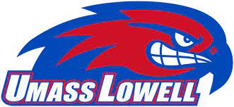

I attended the University of Massachusetts Lowell for my undergraduate where I double majored in computer science and electrical engineering. I started at UML in Spet of 2015 and graduated in Dec 2020 with a bachelors degree in both majors. A link to the Umass Lowell site can be found below:
https://www.uml.edu/Academics

I am currently pursuing a masters degree in software development at Boston University. I started the program in the beginning of 2020 and I have 3 classes left in the program. I intend to graduate in the spring of 2024. A link to the Boston University site can be found below:
https://www.bu.edu/